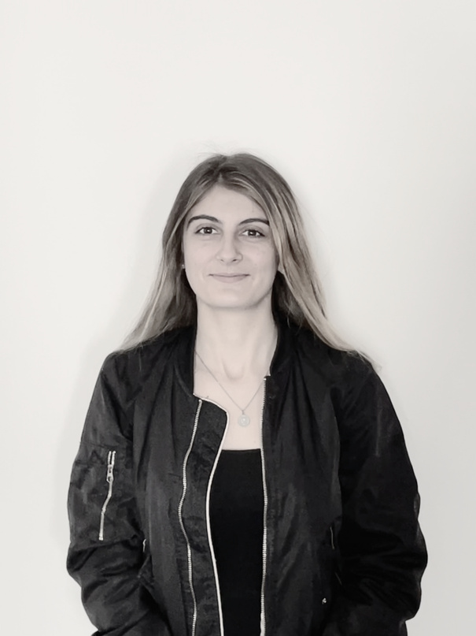
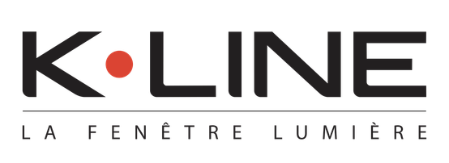
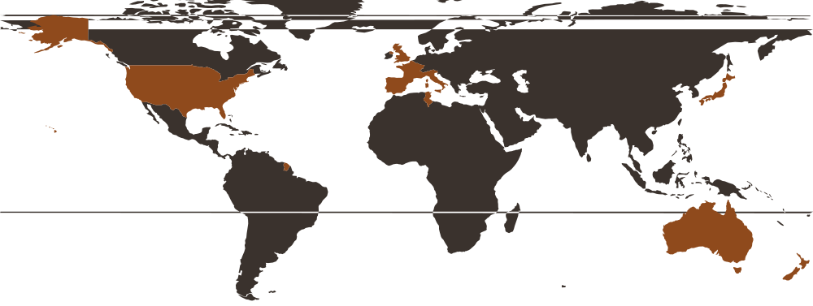

Data visualisation et BI
Des tableaux de bord faits pour être lus : mesures, mise en page, maintenance.
- Power BI
- DAX
- Power Query
- Qlik Sense
- SSRS
- AWS QuickSight
Data analyst en Vendée, et aussi ingénieure BI
Je transforme les données de l'entreprise en indicateurs clairs pour décider, et je conçois des sites et des identités visuelles depuis 2014.
Filtrer mon profil, comme dans un rapport :
SELECT * FROM parcours;
J'ai grandi à Tahiti, où j'ai passé mon bac scientifique au lycée Paul Gauguin, avant de traverser le monde pour étudier l'informatique de gestion à Bordeaux. Aujourd'hui, je vis et je travaille en Vendée.
Mon métier, c'est de rendre les données utiles. Je modélise, je transforme et je mets en forme les chiffres de l'entreprise pour que les équipes métiers sachent où elles en sont, et quoi décider.
Depuis 2014, j'ai un deuxième atelier : je crée des sites, des logos et des vidéos pour des indépendants et des entreprises, en France et en Polynésie. C'est là que j'ai appris qu'un tableau de bord est aussi un objet de design.
Je travaille en méthode agile, au plus près des métiers, avec une idée fixe : qu'un indicateur se comprenne en cinq secondes.
Chloé ChabbertData analyst · Ingénieure BI · Cheffe de projet
Douze ans de création web, menés en parallèle des études puis de la data.
Data & BIWeb & designFormation
3,5 ans
de BI en entreprise, du stage au poste de Data Engineer
12 ans
de sites web, logos et vidéos, depuis 2014

Oct. 2025 – aujourd'hui
K-LINE · Les Herbiers

Sept. 2023 – sept. 2025
Puy du Fou · Les Épesses
Avril – juin 2023
KPC Sud Ouest · Bordeaux
2014 – aujourd'hui
Indépendants et entreprises · France et Polynésie française
Obtenu en 2025
Université de Bordeaux · Talence
Business intelligence, gestion de projet, data engineering, urbanisation des SI.
2019 – 2023
Université de Bordeaux · Talence
Méthodes informatiques appliquées à la gestion des entreprises.
2016 – 2019
Lycée Paul Gauguin · Papeete, Tahiti
Les données de mes employeurs restent chez eux : je raconte donc la démarche plutôt que de montrer les écrans. Ouvrez une ligne pour lire l'étude de cas.
Contexte. Au Puy du Fou, les rapports historiques tournaient sous SSRS : figés, peu lus, difficiles à faire évoluer.
Ce que j'ai fait. Inventaire des rapports avec les métiers, priorisation, conception des applications Qlik, recette et déploiement, en sprints agiles.
Outils. SSRS, Qlik Sense, SQL, Azure DevOps.
Contexte. Simplifier l'accès aux indicateurs clés pour les équipes, sans multiplier les rapports.
Ce que j'ai fait. Étude comparative, mise en œuvre de la solution et premiers tableaux de KPI.
Outils. AWS QuickSight.
Contexte. Chez K-LINE, les données vivent dans l'ERP Dynamics AX 2012 et dans Dataverse (D365).
Ce que j'ai fait. Extraction, transformation et modélisation en schémas en étoile ; requêtes et procédures stockées pour alimenter les rapports.
Outils. SQL Server (SSMS), Dynamics AX 2012, Dataverse.
Contexte. Des équipes qui ont besoin de voir leurs chiffres vite, et juste.
Ce que j'ai fait. Création, optimisation et maintenance des rapports : mesures DAX, préparation Power Query, mise en page pensée pour la lecture.
Outils. Power BI, DAX, Power Query.
Contexte. Stage de consultante chez KPC Sud Ouest, à Bordeaux.
Ce que j'ai fait. Modélisation dans Talend et Snowflake, rapports dans Power BI et Qlik Sense, échanges avec les clients sur leurs besoins.
Outils. Talend, Snowflake, Power BI, Qlik Sense.
Contexte. Des professionnels et des particuliers, en France et en Polynésie, qui avaient besoin d'exister en ligne.
Ce que j'ai fait. Maquette, design, développement et mise en ligne de leurs sites.
Ce que j'ai fait. Affiches, bannières et programmes pour des soirées, un contest de glisse et des commerces, à Tahiti.
À voir. Dans l'atelier, plus bas.
Ce que j'ai fait. Logos, chartes et supports pour des entreprises et des particuliers.
À voir. Dans l'atelier, plus bas.
Ce que j'ai fait. Conception et montage de vidéos pour des clients.
En orange les outils que j’utilise tous les jours chez K-LINE.
Des tableaux de bord faits pour être lus : mesures, mise en page, maintenance.
Requêtes, procédures stockées et modèles en étoile.
Extraire et transformer les données des ERP et des entrepôts.
Des projets menés en sprints, au plus près des métiers.
Sites, logos et vidéos, de la maquette à la mise en ligne.
Niveaux du cadre européen, de A1 à C2.
Le reste du site est en orange et noir. Ici, mes créations gardent leurs couleurs. Cliquez sur une image pour l’agrandir.
Baroof et Sauvage, Tahiti · 2021
Tahiti · 2020 – 2021
Identités pour des marques et des associations
CLAP, application d’événements · 2022
Trois séjours linguistiques, chacun validé par un diplôme, et le goût d’aller voir ailleurs. Touchez un point pour retrouver les villes.

))
Pays visitéSéjour linguistique avec diplôme
Un projet data, un site ou une affiche : écrivez-moi, je réponds en français, en anglais ou en espagnol.
M'écrire